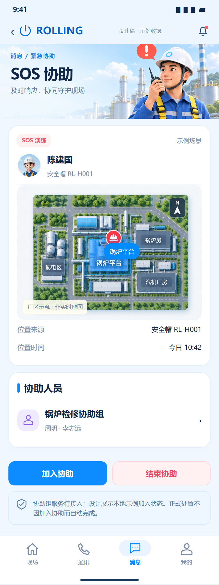
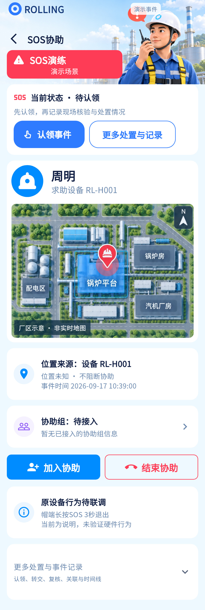

SOS事件处置已有代码；协助组加入/结束只是本地体验，不是RTC群体协助闭环。
相同 · 已有基础
SOS身份、设备、示意图、位置来源、协助入口及服务待接入说明已有。
不同 · UI与场景
当前SOS横幅较大，额外下一步卡与原设备行为说明；参考协助组有示例姓名，当前明确待接入。
01 / 先看 UI
两图显示宽度统一；设计390px与当前360逻辑宽的画布不同。各图可独立滚动到底，点击“原图”放大。


使用既有组件截图；业务数据为示例。
02 / 逐项核对功能与小交互
入口：消息 → SOS 事件 · 当前形态：子页面
| 编号 | 部位 | 设计要求 | 当前UI | 功能结论 | 下一步 |
|---|---|---|---|---|---|
| 26-01 | SOS标题 | SOS协助、紧急/演练区分 | 当前演练横幅和状态卡 | 已有代码：演示数据标识 | 真实SOS不得常写演练；红色适度 |
| 26-02 | 人员设备 | 求助人、安全帽号 | 当前人名及SN | 已有代码：事件快照 | 核对同人多设备，不能用当前登录人的装备替代 |
| 26-03 | 地图 | 厂区示意图 | 当前固定plantMap并标非实时 | 示例边界：不是实时定位地图 | 保留标注，真实位置图需接坐标/区域/层信息 |
| 26-04 | 位置证据 | 位置来源与位置时间 | 当前来源设备，未知时显示位置未知和事件时间 | 部分：事件发生时间不等于定位时间 | 补定位采集时间/质量；未知不阻断协助 |
| 26-05 | 协助组 | 组名与成员 | 当前“协助组：待接入” | 缺失真实服务：设计本身也声明待接入 | 后续接分组/成员/授权/在线状态 |
| 26-06 | 加入协助 | 加入协助按钮 | 当前弹出说明，可体验本地加入或打开已有通信 | 示例边界：不自动呼叫 | 将真实加入与演示明确分开，不能称已建群会话 |
| 26-07 | 结束协助 | 结束已加入的协助 | 当前清本地_demoJoined并提示不关闭事件 | 示例边界 | 后续只结束本次会话，不直接关闭原事件 |
| 26-08 | 已有通信 | 通过事件打开可用通信 | 当前有明确入口且保留eventId | 已有代码：进入通讯后用户发起 | 实测SOS会话与事件关联、无视频设备的同人帽能力 |
| 26-09 | 处置认领 | 现场协助后仍需处置 | 当前保留认领、更多处置和复核流程 | 已有代码 | 不可因协助结束自动置为已关闭 |
| 26-10 | 帽端动作 | 长按SOS约3秒 | 当前显示原设备行为待联调 | 待实测：文本不是硬件证据 | 列入现场联调，不作UI完成项证明 |
| 26-11 | 底部导航 | 参考四栏 | 当前事件子页隐藏 | UI差异 | 恢复一致的导航和安全区规则 |
源码依据
events/event_reference_view.dart:870,943,993；events/events_page.dart:843
链接为随报告保存的带行号快照；行号对应分析时源码。以函数和字段共同定位，不能将请求代码视为执行成功证据。